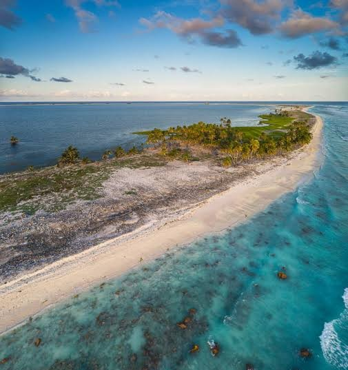

Clipperton Island
Area: 8.9 sq km (3.4 sq mi)
Population: 0
Clipperton Island, also known as Clipperton Atoll and previously as Clipperton's Rock, is an 8.9 km (3.4 sq mi) uninhabited coral atoll in the eastern Pacific Ocean. The only French territory in the North Pacific, Clipperton is 10,675 km (5,764 nmi) from Paris, France; 5,400 km (2,900 nmi) from Papeete, French Polynesia; and 1,280 km (690 nmi) from Acapulco, Guerrero.Clipperton was documented by French merchant-explorers in 1711 and formally claimed as part of the French protectorate of Tahiti in 1858. Despite this, American guano miners began working the island in the early 1890s. As interest in the island grew, Mexico asserted a claim to the island based upon Spanish records from the 1520s that may have identified the island. Mexico established a small military colony on the island in 1905. During the Mexican Revolution, contact with the mainland became infrequent, most of the colonists died, and lighthouse keeper Victoriano Álvarez instituted a short, brutal reign as "king" of the island. Eleven survivors were rescued in 1917 and Clipperton was abandoned.
The dispute between Mexico and France over Clipperton was taken to binding international arbitration in 1909. Victor Emmanuel III, King of Italy, was chosen as arbitrator and decided in 1931 that the island was French territory. Despite the ruling, Clipperton remained largely uninhabited until 1944 when the U.S. Navy established a weather station on the island to support its war efforts in the Pacific. France protested and, as concerns about Japanese activity in the eastern Pacific waned, the U.S. abandoned the site in late 1945.
Since the end of World War II, Clipperton has primarily been the site for scientific expeditions to study the island's wildlife and marine life, including its significant masked and brown booby colonies. It has also hosted climate scientists and amateur radio DX-peditions. Plans to develop the island for trade and tourism have been considered, but none have been enacted and the island remains mostly uninhabited, with periodic visits from the French Navy.